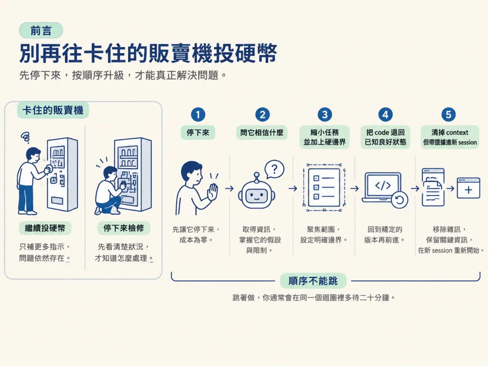
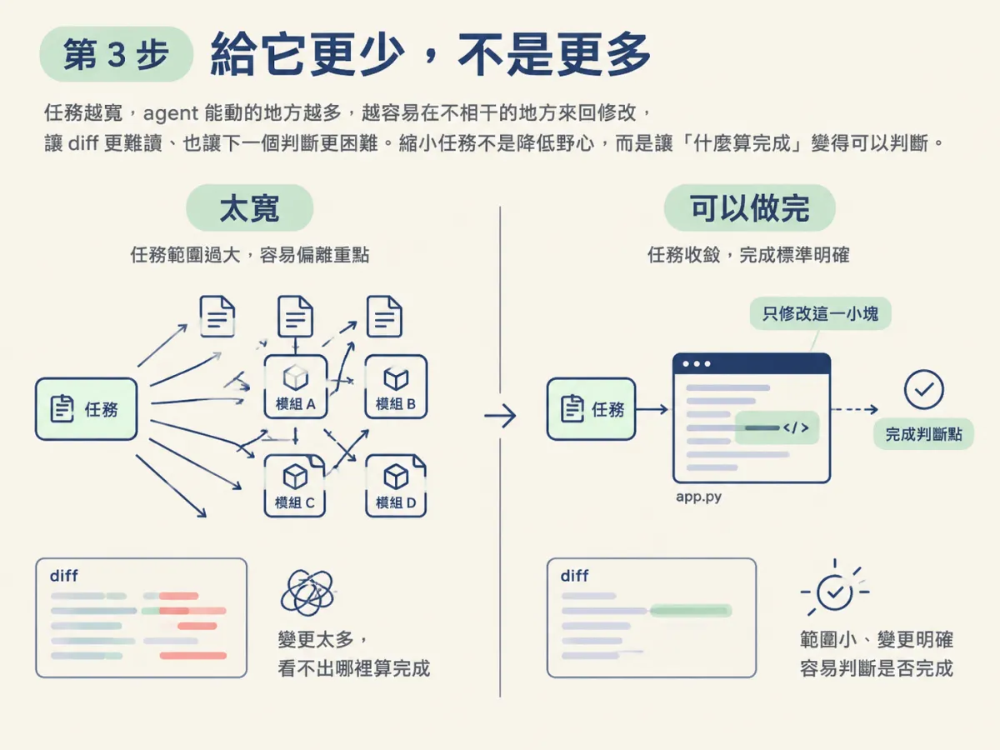
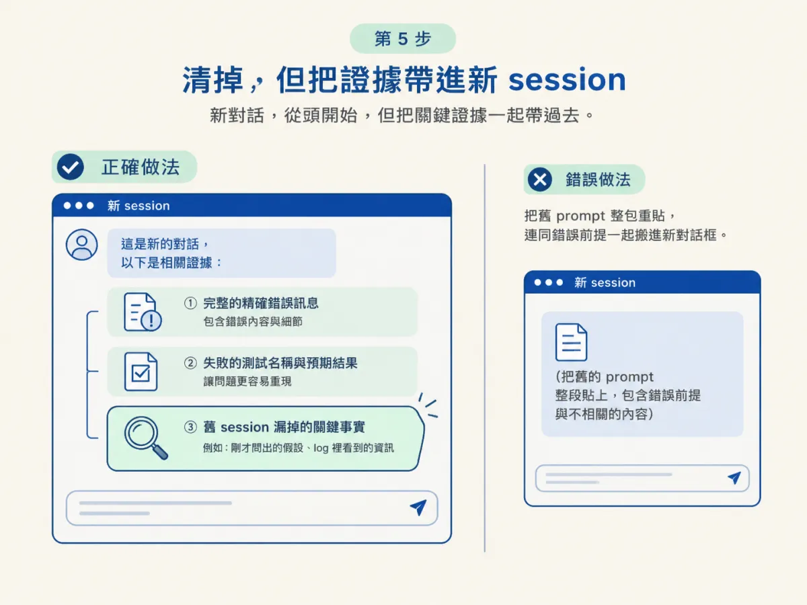
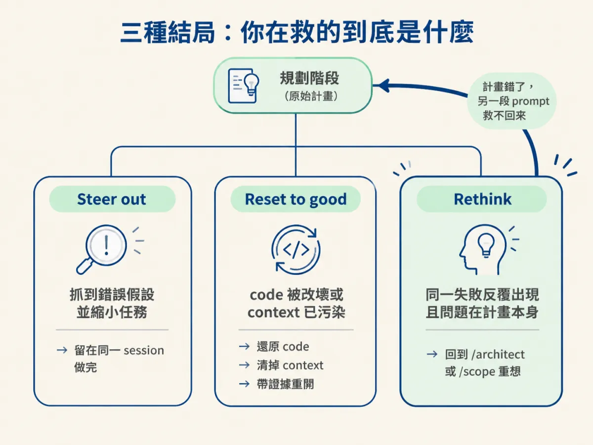

能照順序執行五步升級救回卡住的 session，並用事前計畫與三種結局判斷現在該 steer、reset 還是回頭重想。
你已經認出 agent 在打轉，也判斷了這個 context 是資產還是負債。現在要動手。
多數人在這一刻做的第一件事，是打一段更清楚的指示：「請仔細看錯誤訊息，這次不要再改錯地方。」這個動作的問題不在態度，在對象：你正在對一個已經故障的流程下指令，就像往一台卡住的販賣機再投一枚硬幣，期待它這次會掉下來。
下面五步有固定順序，而且第一步的成本是零。順序本身就是設計的一部分：先讓它停，再取得資訊，再縮小範圍，最後才動 code 與 context。跳著做，你通常會在同一個迴圈裡多待二十分鐘。

確認三件事，沒有的話先補：
在哪裡：你的編輯器或 terminal 裡，agent 正在輸出回覆的那個畫面。
做什麼：按 Esc。
不是 Ctrl+C。Ctrl+C 會退出 session，Esc 只是停止這一輪回應。這兩件事差很多：你要的是「不要再講了」，不是「把整個對話關掉」。
為什麼：成本是零，而你得到的是介入的空檔。它正在產出的下一段修改，很可能還是同一個錯誤假設的延伸；讓它講完，你只是多了一段要清的 diff。
預期看到什麼：輸出停止，session 還在，context 還在。如果你發現整個 session 不見了，那大概是按到了 Ctrl+C，或者工具把兩者綁在一起。先確認你的工具行為，再繼續。
在哪裡：同一個對話框。
做什麼：在改任何東西之前，輸入這句：
What do you think the problem is, and what are you assuming that might be wrong?
為什麼：卡住的 agent 通常不是隨機亂走，而是繞著一個錯誤的假設轉。它自己不會主動說出那個假設，因為對它來說那不是假設，是前提。你直接問，等於逼它把前提搬到桌面上。
很多時候，光是讓它講出來，迴圈就破了：它會發現「對喔，我假設 token 一定在 cookie 裡，但這個專案用的是 Authorization header」。即使沒破，你也得到下一輪要修正的目標。
預期看到什麼：一個具體的假設，例如「我假設錯誤來自非同步時序」、「我假設這個函式只會被呼叫一次」。如果它回你一段模糊的「我需要更多資訊」，那本身就是資訊：它連自己相信什麼都說不出來，這個 session 的狀態已經不太行。
在哪裡：同一則訊息裡，接著第 2 步的答案往下寫。
做什麼：把任務縮小，並加上硬邊界，明確說出它只能改什麼。
來源給的對照很傳神：
| 太寬 | 可以做完 |
|---|---|
| 「重構認證模組」 | 「把 token refresh 函式從這個檔案抽出來，其他都不要動」 |
為什麼：多數迴圈是從任務太寬開始的。任務越寬，agent 能動的地方越多，它就越容易在不相干的地方來回修改，而每一次修改都會讓 diff 更難讀、讓下一個判斷更困難。縮小任務不是降低野心，是把「什麼算完成」變得可以判斷。

預期看到什麼：它下一步只碰你指定的範圍。如果你看到它又開始改別的檔案，直接回到第 1 步。
在哪裡：你的 terminal，或在工具的 checkpoint／rewind 介面。
做什麼：如果前面幾輪已經把 code 改壞，先還原，再繼續。不要叫一個混亂的 agent 收拾自己的爛攤子。它現在最不擅長的就是判斷哪些改動該留。
有一個限制要先知道：checkpoint 可能救不回「透過 shell 指令改動的檔案」。例如 agent 用 mv、sed 或某個 CLI 動過你的檔案，那些變更不一定在 checkpoint 的範圍裡。所以 Git 是通用的後備。
先確認再執行：下面的指令會丟掉未提交的變更。執行之前，先確認你要留下的東西已經 commit、stash 或備份；git reset --hard 尤其不可逆。
git status # 先確認有哪些未提交的變更
git restore . # 丟掉工作區的改動，回到最後一次 commit
git reset --hard <good-commit> # 連分支位置一起退回某個已知良好的 commit
這是示範用的指令，實際參數依你的專案狀態調整。
為什麼：你要的是一個已知良好的起點。如果 code 已經爛掉，就算 agent 接下來想對了，你也分不清哪些是它的新修改、哪些是前一輪留下的殘骸。
預期看到什麼：檔案回到你記得的狀態，跑一次基準測試，確認原本的失敗還在、但沒有新增的破壞。如果連基準都壞了，先修基準，別急著回到 agent。
在哪裡：先寫好開場訊息，再按 clear（或 compact，如果你在上一節判斷它是資產）。
做什麼：不要重貼原本的 prompt。那會把同一個起點、同一個寬度、同一個錯誤假設整套搬進新 session，等於重建一次迴圈。
新 session 的開場要帶三樣東西：
第三樣是關鍵。它通常是你剛剛在第 2 步問出來的假設，或你從 log 裡看到、但沒有進到 agent 眼前的東西。

pnpm test auth 失敗：refresh.spec.ts 的 "refreshes an expired token" 回 401。
預期：token 過期後自動 refresh，回應 200。
已排除：快取、環境變數載入問題。
請只處理 refresh 這條路徑，先告訴我你的假設，不要改其他檔案。
這是示範用的開場格式，換成你自己的錯誤與事實。它做的事，就是把「你腦中已經知道的」變成「新 session 一開場就知道的」。
為什麼：一個乾淨的 session，配上強證據，常常兩輪就解掉一個被污染的 session 十輪解不掉的問題。不是因為新 session 比較聰明，是因為它沒有背著那十輪的錯誤前提。
預期看到什麼：它第一則回覆就針對那個錯誤與那個測試，而不是問你「可以多說一點嗎」。
還有一個讓人比較願意按下去的理由：clear 失去的是對話，不是工作。你的 scope、spec 與 AGENTS.md 都還在磁碟上。
這五步是救援，不是日常。真正的差別在事情發生之前：大型修改之前，先讓 agent 計畫，而且明確要求它不要編輯任何檔案。
這樣你可以在方案還是幾行文字的時候就退掉它，而不是在它改完十個檔案之後，才發現整個方向不對。計畫階段的否決成本是一句話；改完之後的否決成本是第 4 步。
不是每個卡住的 session 都該被救回來。來源把結局分成三種，判斷自己在哪一種，才是這整套流程真正的技能。
| 結局 | 什麼時候 | 你的動作 |
|---|---|---|
| Steer out（帶出來） | 你抓到了那個錯誤假設，並把任務縮小 | 留在同一個 session，把縮小後的任務做完 |
| Reset to good（退回良好狀態） | Code 被改壞，或 context 已經污染 | 還原 code、清掉 context、帶證據重開 |
| Rethink（回頭重想） | 同一個失敗反覆出現，而且問題在計畫本身 | 回到 /architect 或 /scope |
第三種最常被忽略。當計畫本身是錯的，你再怎麼 steer、再怎麼 reset，都只是換一個方式撞同一面牆。來源說得很直白：計畫錯了，另一段 prompt 救不回來。
所以每次卡住，除了問「怎麼救」，也問一句：「這個失敗是不是在告訴我，原本的計畫就不成立？」如果答案是肯定的，那你要做的不是第 5 步，是回到更前面。

下面是課程整理的對照表。它變動很快，使用前請逐列驗證，並標上你查證的日期。這張表會比課程裡任何其他東西都更快過時。
| 動作 | Claude Code | Codex | Cursor |
|---|---|---|---|
| 停止回應 | Esc | Esc | Stop 或 Esc |
| 檢查假設 | 直接問 | 直接問 | 直接問 |
| 縮小任務 | 直接說 | 直接說 | 直接說 |
| 還原程式 | Esc Esc 或 /rewind | git restore | Restore Checkpoint |
| 還原對話 | Esc Esc 或 /rewind | Esc backtrack | 編輯較早的訊息 |
| 重新開始 | /clear | /clear | New chat |
| 保留有用 context | /compact、/context | /compact | Summarise |
| 先計畫再編輯 | Plan mode | /plan | Ask mode |
| 通用救援 | git restore 或 git reset | ||
做完這五步，你應該能確認三件事：
如果第三項答不出來，那你可能只是「讓它停下來」，還沒有真的做出判斷。這不是失敗，但下一次你大概會在同一個地方再卡一次。
跳過第 1 步，直接補指示。這是最常見的，因為它感覺最像「解決問題」。但沒有停下來的空檔，你補的每一句話都會進到同一個故障流程裡。
在第 5 步重貼原本的 prompt。你會得到一個看起來全新、其實背著同一組前提的 session。新的對話框不會自動帶來新的假設。
把 Ctrl+C 當成「停止這一輪」。它會退出 session。你要停的是回應，不是整個對話；這兩件事在緊張的時候最容易按錯。
五步升級照順序來：按Esc停下來（不是Ctrl+C）；問它相信什麼，把錯誤假設逼到桌面上；把任務縮小並加上硬邊界；用 Git 把 code 退回已知良好狀態；最後清掉 context，但帶著精確錯誤、失敗測試與關鍵事實進新 session。事前預防是讓它先計畫、不要編輯。而每個卡住的 session 只會有三種結局：帶出來、退回良好狀態，或承認計畫錯了、回頭重想。
回頭看這整個節點，其實只有兩條線：AI 寫的碼要靠三個來源還原意圖，agent 卡住要靠一個判斷與五步升級救回來。兩條線的共同點是同一句話：不要對著你的猜測動手，先取得證據，再決定要改什麼。